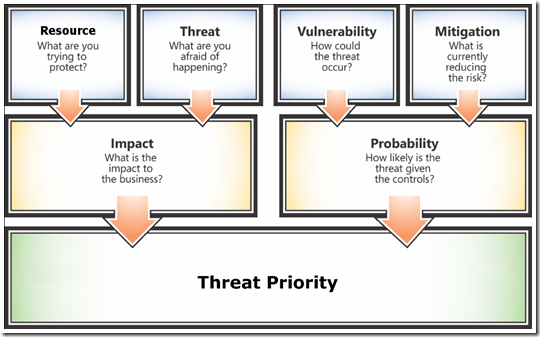
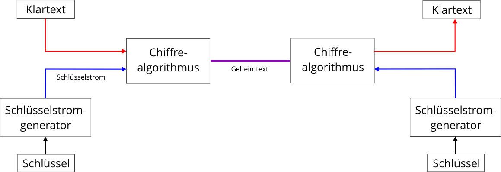
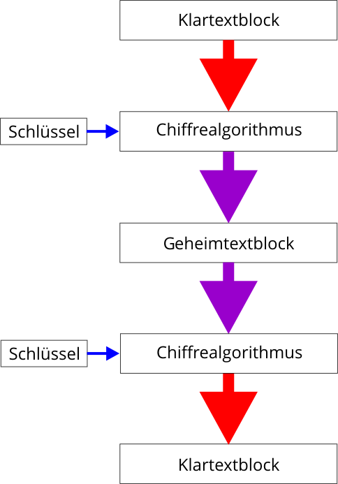
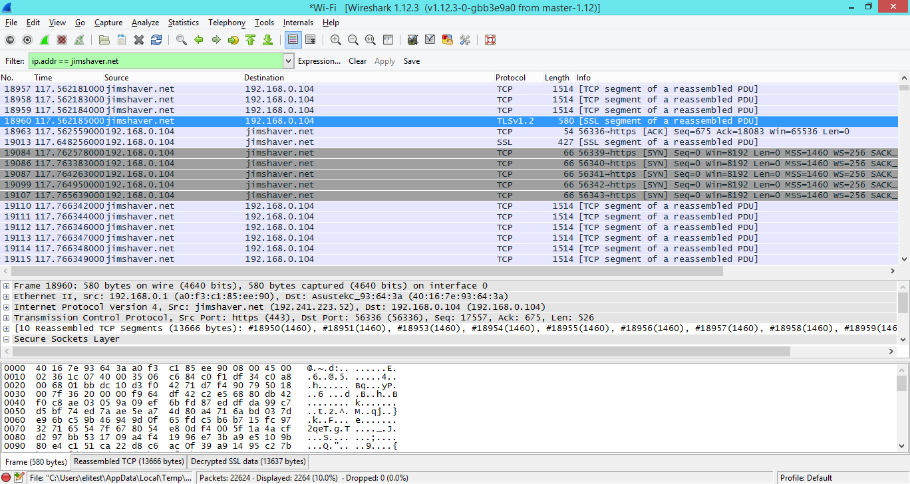
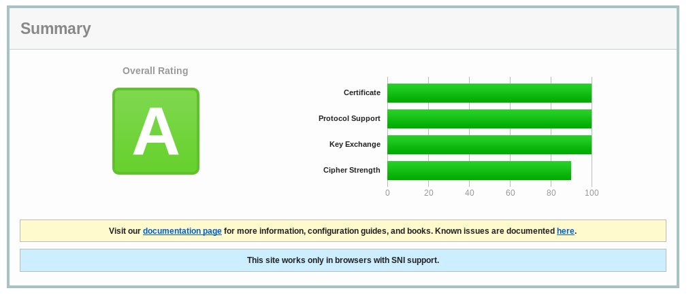
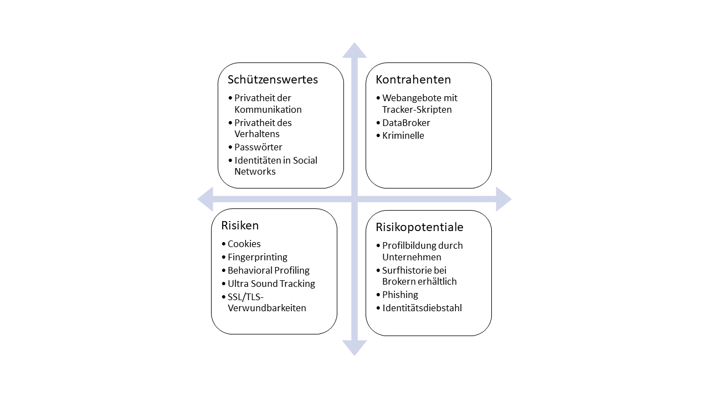

Wanna Cry?
Einstieg in Security by Design and Secure Coding
Stefan Etzold | Tobias Rademacher
13.10.2017
Agenda
- Wanna Cry – Security Nightmares
- Security by Design und Secure Coding
- Secure Coding : Grundlagen (C#, Rust)
- Hashing und Schlüsselableitung (KDF)
- Dateiverschlüsselung, Authentifizierte Verschlüsselung
- Transportverschlüsselung und Ende-zu-Ende-Verschlüsselung
- Make it run, clean and secure?
- Abschlussrunde
Disclaimer
About us
Vorstellungsrunde
About you
Vorstellungsrunde
Wanna Cry? - Nighmares
Wanna Cry
- basisert auf Exploit der Sicherheitslücke MS17-010 im SMB-Protokoll (auch NetBIOS) von Microsoft
- alle Windowsversionen betroffen
- Ransomware mit RSA-Verschlüsselung
- Problem: nicht aktuelle Windwos-Varianten, Windows XP

Cryptographic vulnerabilities in IOTA
Challenges
Herausforderungen
CryptoWars 2.0/3.0
- Justice Department Seeks to Force Apple to Extract Data From About 12 Other iPhones
- Crypto Wars 3.0: Thüringens Verfassungsschutzchef fordert Hintertüren in Krypto-Messengern
- Hillary Clinton wants “Manhattan-like project” to break encryption
- Crypto Wars Part II - The Empires Strike Back
- Crypto Wars 3.0: EU-Rat diskutiert Schlüsselhinterlegung
- CCC fordert Ausstieg aus unverschlüsselter Kommunikation
- The second “Crypto War” and the future of the internet
- Cryptowar: Verfassungsschutz fordert ein Ende der „kryptierten Kommunikation“
- Obama will Verschlüsselung aufweichen
Herausforderungen
It's the econyomy, stupid!
- Sloppy security hygiene made Sony Pictures ripe for hacking
- Big Other: Surveillance Capitalism and the Prospects of an Information Civilization
Komplexität, Vernetzung, Verwundbarkeit und Resilienz
(systemtheoretische Perspektive, Luhmann)
- Systemtheorie: lose und enge Kopplung (→ Vernetzungsgrad)
- enge Kopplung erhöht Abhänigkeiten (Autonomieverluste)
- enge Kopplung begünstigt Ausfälle
- enge Kopplung erhöht die Wahrscheinlichkeit von Angriffen (Hacking)
- enge Kopplung erhöht die Attraktivität für Angriffe
Everything is broken
- NSA v. SSL v. VPN (IPSec) v. Tor
- SSL Attaken
- Bad defaults
Security by Design und Secure Coding
Security by Design
»Secure by design, in software engineering, means that the software has been designed from the ground up to be secure. Malicious practices are taken for granted and care is taken to minimize impact when a security vulnerability is discovered or on invalid user input.« (Wikipedia)
Softwarequalität
- Agilität: Make it run, make it clean, make it secure?
- Penetrationtests
- Fuzzing
Mindset & Hacker Ehtics
- Greyhat
- Advocatus Diaboli
- Weiterbildung, Training, Intressse
Risikoanalyse an Hand von Bedrohungsmodellen
Bedrohungsmodelle:
- beschreiben Möglichkeiten von Angriffen und decken Verhaltensweisen oder Übertragungswege und -formen auf, die mit Risiken verbunden sein können
- helfen Grenzen und Möglichkeiten von technischen Lösungen wie Ende-zu-Ende-Verschlüsselung oder Transportverschlüsselung besser einzuschätzen und eigenes Verhalten anzupassen.
Bedrohungsmodell
Analyse
Die W-Fragen
Schutzintressen und -rahmen
- Was möchte ich schützen?
- Wie wahrscheinlich ist die Notwendigkeit es schützen zu müssen?
- Vor wem möchte ich es schützen?
- Was sind die Konsequenzen, wenn der Schutz versagt?
- Wie viel Aufwand und Umstände möchte ich in Kauf nehmen und worauf möchte ich verzichten, um es zu schützen?
Assets
Beispiele
- Passwörter
- Geld
- Dateien (Fotos, Videos, Dokument, etc.)
- Chats, Unterhaltungen, Korrespondenzen
- Metadaten
- private Geheimnisse, Betriebsgeheimnisse
Angreifer
Beispiele
- neugieriges Umfeld (Datenschutz)
- Diebe, kriminelle Elemente
- Nachrichtendienste mittels Massenüberwachung (NSA, GCHQ, BND)
- Sicherheitsbehörden (BKA, Verfassungsschutz)
Folgen bei Schutzversagen
Beispiele
- Identitätsdiebstahl: Hacker/Script-Kiddie übernimmt Facebook-Account
- Übernahme/Verlust des Geräts: Smartphone, Laptop, Tablet, E-Book-Reader
- Datenverlust: Messenger-App, welche es erlaubt übermittelte Bildnachrichten abzugreifen, Systemverschlüsselung durch Erpressungs-Trojaner
Angriffspotentiale
Beispiele
- physischer Gerätezugriff Familienangehöriger installiert Überwachungssoftware auf meinem Gerät
- Zugriff auf den Transportweg der Daten Angreifer*In könnte das LAN/WLAN ausspionieren
- Phishing/Trojaner, Manipulation des Endpunktes der Kommunikation Angreifer*In könnte eine Website gefälscht haben
- Manipulation des Systems/von Anwendungen Angreifer*In nutzt Sicherheitslücken im System/ Applikationen
Fazit
Bedrohungsmodelle als Mittel zur Rationalisierung
- Bedrohungsmodelle unterstützen bei der Abwägung von Risiken in Bezug auf Datensicherheit und -schutz
- Bedrohungsmodelle identifizieren schützenswerte Güter (Assets), Angreifer*Innen, Risiken und Angriffspotentiale
- Identifizierte Bedrohungen können besser eingeschätzt werden (Entscheidung für oder gegen Maßnahmen)
Grenzen erweitern
Basis: Grundregeln und Maßnahmen
- Update, Updates, Updates
- Backups, Backups, Backups
- Virenscanner (+/-)
- Verschlüsselung/Verschleierung
- Unplugged: Sensible Daten auf System ohne Netzzugang aufbewahren und verschlüsseln
Grenzen

Secure Coding
- Subset devensiver Programmierung
- Verständlichkeit und Nachvollziebarkeit des Code erhöhen (auditierbar, wartbar)
- Verwandschaft zum CleanCoding
- Security v Obscurity
Secure Coding
Techniken
- gute Kapselung (schwierig zu erreichen)
- Strategie im Umgang mit Legacy Code
- Input and output handling
- Ressource-Balacing
Secure Coding
Techniken
- Proaktiver Umgang mit potentiellen Bugs
- Design by contract und Assertions
- C#, Java, Ruby, Python …: Exception > Return Codes
- Rust v C/Go: Error-Type+Matching/ErrorChain > Return Codes
- The Pragmatic Programmer Quick Reference Guide
Grundlagen
Best Practices: .NET Security Cheat Sheet
Exception Handling in C#
- Best Practice
- UnexcpectedExcetion Handler
- catch ins Nirvana
Design by Contract in C#
- Code Contracts
- Design by Contract v UnitTesting
SecureString
// Instantiate the secure string.
SecureString securePwd = new SecureString();
ConsoleKeyInfo key;
Console.Write("Enter password: ");
do
{
key = Console.ReadKey(true);
// Ignore any key out of range.
if (((int) key.Key) >= 65 && ((int) key.Key <= 90))
{
// Append the character to the password.
securePwd.AppendChar(key.KeyChar);
Console.Write("*");
}
// Exit if Enter key is pressed.
} while (key.Key != ConsoleKey.Enter);
Console.WriteLine();
securePwd.Dispose();
How secure is SecureString?
»Overall, SecureString is more secure than String because it limits the exposure of sensitive string data. However, those strings may still be exposed to any process or operation that has access to raw memory, such as a malicious process running on the host computer, a process dump, or a user-viewable swap file.« – Code-Doku
How secure is SecureString?
»Instead of using SecureString to protect passwords, the recommended alternative is to use an opaque handle to credentials that are stored outside of the process.« – Code-Doku
Andere Probleme in C#
goto- Crypto API unter verschiendenen Windows Plattformen/.Net Platformen
- Leaking Information: z. B. Logging, Crash und Stacktrace im Eventlog
- DLL-Hölle: in GAC we trust?
- Pluginsysteme v Trust
Andere Probleme in C#
- unsignierte Assemblies
- Zugriff auf Win32 API
- Userkontext, Systemkontext, Impersionierung
unsafeund Pointer-Gedöns- COM-Anbindung
Error Handling in Rust
Design by Contract in Rust
Crypto in Rust
- vorzüge von Rust als systemnahe Programmiersprache
- Aktuelle Empehlung: ring, libsodium Wrapper
- rust-crypto mit Vorsicht verwenden
- Fehlende Auditierung
Hashing
Kryptologische Hashfunktion
- Einwegfunktionen: einfach ermittelbar, schwer umkehrbar
- Schlüssellose Hashfunktionen: Einweg-Hashfunktionen und kollisionsresistente Hashfuntionen
- Schlüsselabhänige Hashfunktionen: Message Authentication Codes (MAC)
- kann zur Bildung von Fingerabdrücken zur Prüfung von Nachrichten(-blöcken) und zur Überprüfung von Dateidownloads verwendet werden
Kryptologische Hashfunktion
Übersicht (Auswahl)
| Verfahren | Veröffentlichung | Empfehlung |
|---|---|---|
| MD5 | 1992 | gilt als unsicher |
| SHA (SHA-Famlie) | 1993 (SHA-0), 1995 (SHA-1), 2002 (SHA-256, SHA-384, SHA-512) | Im Februar 2017 wurde die erste Kollision für SHA-1 veröffentlicht. → SHA-512 verwenden |
| RIPEMD | 1992, 1996 (RIPEMD-128, RIPEMD-160) | kollisionen für die Variante von 1992 möglich |
| Whirlpool | 2003 | keine Kollisionen bekannt, 512 Bit Hashwert, zehn AES-Runden |
| SHA-3/Keccak | 2011 (3. Version) | Alternative zu SHA-2 |
| BLAKE | 2010 (BLAKE2 2012) | BLAKE war einer der Finalisten im SHA-3-Auswahlverfahren der NIST. |
Schlüsselableitung (KDF)
Exkurs
Schlüsselableidungsverfahren (KDF)
- kryptologische Hashfunktion
- speziell für das Hashen und Speichern von Passwörtern entwickelt wurde
- mit dem Ziel entwickelt, das Hashing möglichst aufwändig zu gestalten
Schlüsselableidungsverfahren
Übersicht (Auswahl)
| Verfahren | basiert auf | Empfehlung |
|---|---|---|
| PBKDF2 | DK = PBKDF2(PRF, Password, Salt, c, dkLen) |
vom NIST standardisiert; mit min. 100 000 Iteratioen durchführen |
| scrypt | sala20/8 | mit niedrigen Parametern durch GPU-Hardware angereibarer als bcrypt; Seitenkanalattacke durch cache timing theoretisch möglich |
Schlüsselableidungsverfahren
Übersicht (Auswahl)
| Verfahren | basiert auf | Empfehlung |
|---|---|---|
| bcrypt | blowfish; Länge des Passworts auf 56 Bytes beschränkt | angreifbar (Wörterbuchangriff oder Brute-Force-Methode), bessere Ergebnisse als PBKDF2 |
| Argon2 | Blake2b | Empfehlung der unabhänigen Password Hashing Competition (PHC); weitere Finalisten: Catena, Lyra2, Makwa und yescrypt |
PBKD2
Code-Bespiel C#
Argon2
Code-Bespiel C#
Argon2
Code-Bespiel Rust
Authentifizierte Verschlüsselung
Symmetrische Verschlüsselung (1/4)
https://de.wikipedia.org/wiki/Symmetrisches_Kryptosystem
Gleicher Schlüssel für Verschlüsselung und Entschlüsselung der Nachricht (oder Berechnung beider Schlüssel auseinander)
Video zur Einführung in symmetrische Verschlüsselung (englisch)
Symmetrische Verschlüsselung (2/4)
>Die Verschlüsselung hat zwei grundsätzliche Ziele: Konfusion und Diffusion
- 1.) Konfusion:
- Zusammenhang zwischen Geheimtext und Schlüssel so komplex wie möglich machen um damit Kryptoanalyse zu erschweren
- Erreicht wird das z. B. durch nichtlineare Substitutionen von Eingabe und Ausgabe
Symmetrische Verschlüsselung (3/4)
- 2.) Diffusion:
- Auflösen von statistischen Strukturen des Klartextes
- statistische Analyse nach Buchstabenhäufigkeit im Chiffretext läuft ins Leere
guter Chiffretext ist nicht von Zufallszahlen und -zeichen zu unterscheiden
Symmetrische Verschlüsselung (4/4)
2 Verfahrenstypen:
- Stromverschlüsselung
- Blockverschlüsselung
Stromverschlüsselung (1/2)
Schema

Stromverschlüsselung (2/2)
https://de.wikipedia.org/wiki/Stromchiffre
- Zeichen des Klartextes werden mit den Zeichen eines Schlüsselstroms verknüpft
- Schlüsselstrom ist als pseudozufällige Zeichenfolge aus dem Schlüssel abgeleitet
- jedes Klartextzeichen kann sofort in ein chiffriertes Ausgabezeichen übersetzen werden
- besonders für Echtzeitübertragungen geeignet, z. B. für Mobilfunk
Blockverschlüsselung (1/3)
Schema

Blockverschlüsselung (2/3)
https://de.wikipedia.org/wiki/Blockchiffre
- Klartext fester Länge (Block) wird – bestimmt durch Schlüssel und Chiffrealgorithmus – in einen Geheimtext fester Länge gewandelt
- mehrere Zeichen (Block) werden in einem Schritt ver- bzw. entschlüsselt, daher schnell
- Blockchiffren können jeweils nur einen einzigen Block verschlüsseln
- daher wird für Texte beliebiger Länge ein kryptographischer Betriebsmodus definiert, der die Anwendung des Verschlüsselungsalgorithmus auf den Datenstrom (mehrere Blöcke) festlegt
Blockverschlüsselung (3/3)
https://de.wikipedia.org/wiki/Blockchiffre
- modernen Blockchiffren als iterierte Blockchiffren konzipiert:
- Eingabe wird in mehreren gleich aufgebauten Runden verarbeitet
- Dazu werden aus dem Schlüssel sogenannte Rundenschlüssel abgeleitet
AES-Verschlüsselung
- Industriestandard
- gilt als ungebrochen (sogar von der NSA)
- Hardwarebeschleunigung
- What possibly could go wrong?
Betriebsmodus: Electronic Codebook (EBC)
- leaks information
- CryptoPals: Detect AES in ECB mode
Betriebsmodus
- denn geeignetesten verfügaren auswählen
- Modes that require padding: ECB (›unpraktisch‹), CBC; besser: AES+CBC+HMAC
- Stream cipher modes: CTR, OFB, CFB z. B. AES-GCM+CTR
- Disk Encryption Modes: XEX, XTS, LRW (Achtung nur dafür verwenden)
Authentificated Encryption
- Authenticated Encryption with Associated Data (AEAD)
- verhindert padding oracle attacks (z. B. Lucky 13)
- erkennt Mainpualitionen am Chiffrat (bei der Entschüsselunng)
- fügt einen HMAC zur Verschlüsselung hinzu
Encrypt-then-MAC (EtM)

Exkurs: Initialisierungsvektor (IV)
- Problem der Verknüpfung bei der Blockchiffierung
- CBC: Known Plaintext Attac (bekannter Klartext)
- Lösung: erste Klartextblock mit einem IV XOR-verknüpft
- IV muss für jeden gesammten Verschlüsslungsvorgang krptografisch sicher zufällig erzeugt werden
- vgl. Nonce (number used once, used only once)
Authentifizierte Verschlüsselung in C#
Transportverschlüsselung
HTTPS (SSL/TLS)
- HTTPS: Standardverschlüsselung beim Abruf von Websites
- SSL/TLS schützten die Übermittlung der Daten (Transportschicht)
- Komplexes Protokoll, mit zwei Hauptzielen:
- Verschlüsselung (Daten vor anderen verbergen)
- Identifikation (Können sich zwei Kommunikationspartner vertrauen?)
- Zertifikate auf Anbieterseite (Website, WebServer) notwendig (Vertrauensdilemma)
SSL/TLS Protokoll (I)
- Handshake: Server und Client (Browser) vereinbaren Art der Verschlüsselung (Wie wollen wir uns miteinander unterhalten?)
- Server schickt ein Zertifikat und einen Schlüssel
- Client: Beginne zu verschlüsseln
- Server: Beginne zu verschlüsseln
- SSL/TLS-Verschlüsselung etabliert
SSL/TLS Protokoll (II)

SSL/TLS Protokoll (III)
Broken Wing
SSL/TLS & Sicherheit (I)
| Verwundbarkeit | Attacke |
|---|---|
| TLS 1.2 | SLOTH |
| TLS 1.0 (RC4) | Beast |
| SSL 3.0 | POODLE |
| SSL 2.0 | DROWN |
Broken Wing
SSL/TLS & Sicherheit (II)
| Verwundbarkeit | Attacke |
|---|---|
| RSA-Export-Keys | FREAK |
| Downgrading-Attacken | Logjam, SSL-Strip |
| Kompression | CRIME and BREACH attacks |
| Cache-Timining-Attacke/Implementierung | CREAM, Heartbleet |
Decrypting TLS Browser Traffic With Wireshark
Broken Wing
SSL/TLS & Sicherheit (IV)
Das Problem mit den Root Zertifikaten
SSL Test
Transportverschlüsselung prüfen
Deploying TLS 1.3: the great, the good and the bad
Improving the encrypted the web, one round-trip at a time
Exkurs: HTTP/2
HTTP Nachfolger
- Kompatibilität zu den Vorgängern
- Verschlüsselung defacto Standard
- Geschwindigkeitssteigerung:
- Header Compression (Vorbild HSTS, Vermeidung von Caching/Timing-Attacken)
- Server Push
- Multiplexing
- Problembehebung(en) von HTTP 1.1
Bedrohungsmodell
Tracking/Transportverschlüsselung
SSL in .Net und C#
- SSLStream
- Alternative: OpenSSL ? (Heartbleat, CREAM, usw.)
SSL in Rust
- OpenSSL Bindings
- Hoffnung: ring (Borring SSL)
Ende-zu-Ende-Verschlüsselung
Perfect Forward Secrecy
- Späteres Aufdecken oder Brechen von geheimen Nutzerschlüsseln darf es nicht erlauben, frühere oder künftige Nachrichten zu entschlüsseln
- ⇒ neue Schlüssel für jede Nachricht erzeugen
PFS-Problem
- Schlüsselerzeugung ohne Schlüsselaustausch
- erfordert, dass beide Teilnehmer online sind
- erfordert einige Hilfsdaten in beide Richtungen
- die Forderung FS ist strenggenommen unvereinbar mit asynchronen Nachrichten (wie SMS)
- durch Double-Ratchet gelöst. (Achtung, nicht alle Messenger-Apps implementieren Double Rachtet (z.B. Threema, Telegram)
- OMEMO
OTR
- Borisov/Goldberg/Brewer, 2004:
https://otr.cypherpunks.ca/otr-wpes.pdf
Forderungen an OTR
- Beglaubigung während der Konversation
- Abstreitbarkeit nach der Konversation
- Perfect Forward Secrecy (PFS)
- Alle 3 Features auch in Nachfolgern (OMEMO, Double Ratchet, mpOTR)
- einfaches OTR kann als Layer auf Chatsystem laufen (z.B. Plugin in ICQ/Client), bessere Protokolle brauchen Servererweiterung (XEP-0384 für Clients verlangt 0334 und/oder 0313 für Server)
The Good, The Bad and the Ugly
Ende-zu-Ende Verschlüsselung implementieren
- Hoch gelobtes Code-Beipiel: Signal App (Java)
- Wire App (Rust, Java)
- Double Ratchet in C#: libsignal-protocol-pcl?
- Obsurity: Telegramm (bittet nicht nachmachen)